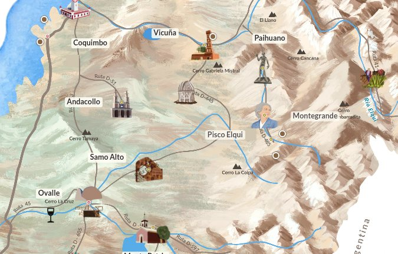
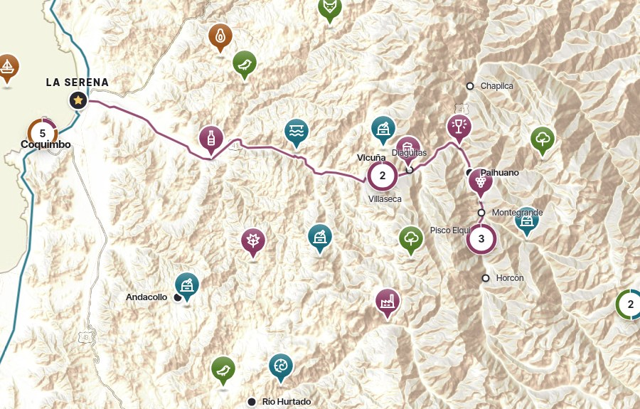

Un lenguaje visual para leer la región de un vistazo.
Iconografía propia para el mapa de la Región de Coquimbo: un pin por categoría, un glifo por tipo de lugar y reglas de construcción idénticas para que el mapa se lea limpio a cualquier zoom.
Principios
Cada decisión busca lo mismo: que la categoría se reconozca por color y el tipo de lugar por silueta, sin leer texto.
- 1Color = categoría. Cinco tonos de la tierra del norte chico, todos con contraste AA sobre blanco.
- 2Silueta = tipo. 47 glifos distintos; ninguno se repite entre categorías y todos se distinguen a 16 px.
- 3Un solo trazo. Línea de 2 px, extremos y uniones redondeadas, sin rellenos: misma densidad óptica en todo el set.
Construcción
Grilla de 24 × 24 con 2 px de margen y keylines comunes (círculo Ø20, cuadrado 18, rectángulos 16 × 20 y 20 × 16). Los glifos se dibujan a tamaño nativo dentro del pin, así el trazo cae en píxel entero y se ve nítido a 1×.
Keylines. Área viva 20 px · círculo Ø20 · cuadrado 18 · trazo 2 px.
- Cuerpo: círculo Ø36 con cola, color de categoría
- Anillo: borde blanco de 2,5 px que lo separa del relieve
- Brillo: degradé sutil arriba, sombra interna abajo
- Glifo: 24 px nativos, blanco, trazo 2 px
- Sombra de contacto: elipse difusa en el ancla
Color
Paleta tomada del paisaje: orujo del pisco, cielo del Elqui, adobe, matorral y la tinta de la cartografía. El contraste del glifo blanco sobre el pin se calcula en vivo.
Estados y movimiento
Los cambios de estado usan solo transform y opacity, con una curva spring de 380 ms. Con «reducir movimiento» activo, todo cambia sin animación.
Jerarquía de asentamientos: las capitales usan insignias de cartografía clásica (no pines) para no competir con los puntos de interés.
Biblioteca de glifos
Todo el set, agrupado por categoría, con el número de lugares del mapa que lo usan.
Tipografía
Inter Tight para títulos y etiquetas del mapa; Inter para textos. Sans contemporánea, tracking cerrado en titulares y jerarquía clara por peso.
Antes y después
Del mapa genérico de Google con pines por defecto a un sistema propio, legible y coherente.

